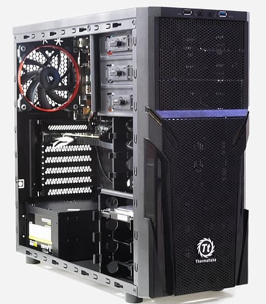

Chassie

Om man exempelvis vill bygga en speldator är det viktigt att komponenterna inte blir överhettade, då är det bra med ett chassi som har bra ventilationsförmåga. Dessa är lite större och kan låta en del. Om man inte tänker använda sin dator som en speldator kan det därför vara smart att välja ett sämre ventilerat och mindre chassi då de ofta är tystare.
Olika chassin klarar bland annat av olika storlekar på moderkortet, mängder grafikkort och mängder hårddiskar, om du till exempel har ett ATX-moderkort behöverdu ha ett ATX-chassi. Chassit bör alltså väljas beroende på vad din dator ska användas till och vilka komponenter du ska ha i din dator.
Källor: Enkel teknik, vad inehåller en dator
Ne, dator
Ne, datorarkitektur